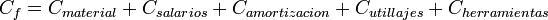

De: La Frikipedia, la enciclopedia extremadamente seria.
De: La Frikipedia, la enciclopedia extremadamente seria. De: La Frikipedia, la enciclopedia extremadamente seria.
Cuando la industria entra en una resonancia únicamente amortiguable por más producción, la música suena al compás de la forja y la estampación.
En función del camino que recorre el material, se distingue los sistemas continuos de los discontinuos o discretos.
Por un lado, los sistemas continuos se caracterizan en que los materiales siguen la misma ruta, obteniéndose normalmente un único producto o con pocas diferencias en caso de ser varios. Normalmente se cuentan en peso o volumen, como por ejemplo el carbón, pero las nuevas tendencias de montar sistemas continuos para el cebado y ejecución de pollos exigen contar en unidades.
Estos sistemas son los típicos de las películas en las que el Héroe se ve enzarzado, al caer atrapado en la cinta transportadora y tener que sortear varias punzonadoras y cizalladoras, para terminar en un horno y esperar a que el amado o amada lo rescate. Los anglosajones siguen con sus disparates... favor de no intentar esto en los polígonos.
Por otro lado, los sistemas discontinuos son de tipo taller, pudiendo variar la ruta del material de un ejemplar a otro. Cuentan con máquinas universales que les permiten adecuarse a la moda del momento. Su flexibilidad les permite soportar que de pronto los tazos se dejen de comprar y ponerse a fabricar cromos de cualquier memez. Normalmente ligados a cierto grado de artesanalidad, se piensa erróneamente que los productos obtenidos en talleres son de mejor calidad. ¿Va a ser más chapucera una máquina de control numérico que un operario ocioso sujeto a hacer huelgas y a cargarse la producción? ¿Te crees tú que la mano de obra de Casa Tarradellas para FABRICAR, que no hacer, sus pizzas son abuelitas, que lo hacen con aceita de oliva y no de motor?
Este tipo de fabricación se dedica más a invertir en análisis de demanda que en el propio utillaje. Básicamente, lo que hace es poner la televisión y comparar lo que echan en las cadenas en horas puntas, y viendo que en la tres dan Dragon Ball, comienzan la producción ajustada (ni más ni menos de que lo que se vaya a vender) de tazos con motivos de la citada serie para bolsas de patatas. Los análisis de demanda posteriores determinarán que se produjo pérdidas con esta maniobra de pura publicidad comercial, a manos de la bollería de la competencia que dedició poner cromos de Oliver y Benji. ¿La razón? La emisión de Dragon Ball iba por la saga de Garlick, y a nadie le interesa tener un tazo de la Familia del Mal. Entonces la empresa se ve forzada a abrir el Departamento de Frikismo, teniendo que hacer un ERE y cerrar tropeciantas naves para compensar los gastos que ello supone.
Existe un error conceptual muy extendido consistente en confundir la fabricación ajustada con la fabricación a trancas y barrancas, dado que la seguna también es ajustada, pero no en la cantidad de productos sino en los medios disponibles para fabricarlos.
Por tanto, sus características principales se resumen en:
Sea un capital de 5.000.000 € procedente de trata de personas, narcotráfico, comercio de órganos y de armas, todo en billetes de 50 €, 20 €, 10 € y 5 €. ¿Cómo blanquearlo? Convirtiéndonos en nustros propios clientes, creando una fábrica para elbaroar productos que nosotros mismos compraremos con el mencionado capital, para que de esta manera pase por caja.
La industria de este tipo opta por la fabriación de productos muy caros, para blanquear la mayor cantidad posible de dinero, pero productos que a su vez puedan aprovechar para cualquiera de sus redes de contrabando sin llamar la atención. Hay empresas que utilizan como tapadera la fabricación de tapas de cualquier tipo para mofarse de la Policía y del Gobierno, aunque algunas de ellas lo hacen erróneamente, como Dimitri-Natasha S.L., cuyas tapas eran de patatas con chistorra.
Adicionalmente, la fabricación tapadera cuenta con los medios tecnológicos para determinar los costes óptimos de fabricación y poder alejarse por encima en un orden de diez veces.
Qué fácil es definir los costes de fabricación como

para después coger y hacer
para acto seguido, cuan ventosa de pulpo, irse pegando parasitariamente en la economía extranjera y destruir su industria, al vender los productos tan baratos.
Es interesante cómo las empresas dedicadas a los electrodomésticos sólo quieren ser conocidas por ello, ocultando al consumidor áreas de negocio de fabricación, industria pesada y hasta automovilística. El siguiente lenguaje de programación está desarrollado por una de estas empresas.
Se desea mecanizar en una fresadora de control numérico una placa cuadrada para que estudiantes de nuevo ingreso se familiericen con el lenguaje de programación. El mecanizado, consistente en una serie de ranurados, se rige por los siguientes bloques:
|
!Funciones preparatorias N10 G90 G94 N20 G00 X15 Y25 Z100 T1.1 M06 N30 S800 M03 !Mecanizado de la H N40 Z-10 N50 G91 G01 Y-10 N60 G00 Y5 N70 G01 X10 N80 G01 Y5 N90 G00 Y-5 N100 G01 Y-5 |
N110 Z10 N120 G00 X20 !Mecanizado de la O N130 Z-10 N140 G01 Y10 N150 X10 N160 Y-10 N170 X-10 N180 Z10 N190 G00 X30 !Mecanizado de la L N200 Z-10 |
N210 G01 Y10 N220 G00 Y-10 N230 G01 X10 N240 Z10 N250 G00 X20 !Mecanizado de la A N260 Z-10 N270 G01 Y10 N280 G00 Y-5 N290 G01 X10 N300 G01 Y5 |
N310 G01 X-10 N320 G00 X10 N330 G00 Y-5 N340 G01 Y-5 N350 Z10 N360 G00 X20 !Mecanizado de la coma N370 Z-10 N380 G01 X-10 Y-10 N390 G00 X10 Y10 N400 Z10 |
N410 G00 X30 !Mecanizado de la M N420 Z-10 N430 G01 Y10 N440 G01 X5 Y-5 N450 G01 X5 Y5 460 G01 Y-10 N470 Z10 N480 G00 X20 !Mecanizado de la U N490 Z-10 N500 G01 Y10 |
N510 G00 Y-10 N520 G01 X10 N530 G01 Y10 N540 G00 Y-10 N550 Z10 N560 G00 X20 !Mecanizado de la N N570 Z-10 N580 G01 Y10 N590 X10 Y-10 N600 Y10 N610 G00 Y-10 |
N620 Z10 N630 G00 X20 !Mecanizado de la D N640 Z-10 N650 G01 Y10 N660 X10 Y-5 N670 X-10 Y-5 N680 Z10 N690 G00 X30 !Mecanizado de la O N700 Z-10 N710 G01 Y10 |
N720 X10 N730 Y-10 N740 X-10 !Parada del cabezal N750 M05 !Fin del programa N760 M30
|
Se pide:
1-. Representar la trayectoria de la herramienta y justificar el tipo de fresado que se debe emplear para conseguirla sin necesidad de emplear interpolaciones circulares y sabiendo que los bordes son redondos.
La trayectoria de la herramienta resultaría:
HOLA, MUNDO
Sin embargo, al no poder realizar interpolaciones circulares las O tendrían que ser rectángulos, la U formada por ángulos rectos y la D tendría que ser un triángulo a derechas (por no usar el paint). Cualquier fresado frontal consigue bordes redondeados.
2-. Justifique la sujeción de la pieza que debe emplearse, según los criterios de la fabricación ajustada, fabricación a trancas y barrancas, fabricación tapadera y fabricación parasitaria.
3-. Sabotée el programa modificando exclusivamente un carácter.
El mayor daño se hace indudablemente modificando el bloque 50, utilizando la función G90 en lugar de la función G91. Las coordenadas pasarían a ser absolutas y la fresadora mecanizaría una y otra vez en el mismo sitio, al repetirse tantas veces secuencias como X20 ó Y10.
4-. Se deja la tarea de producción de 3012 piezas al becario de laboratorio. La fresadora se trata en realidad de un centro de mecanizado que adicionalmente dispone de cambio automático de piezas. Sabiendo que con la excusa de irse a fumar un cigarrillo el becario acaba en la cafetería jugando al mus, determine las pérdidas ocasionadas a la Universidad, teniendo en cuenta que las piezas son de titanio macizo de 40x40x40 cm^3. Dibuje a mano alzada la nueva trayectoria del ranurado.
El becario haría el cambio mencionado en el apartado anterior, pero con naturalidad y sin picardía, al no sonarle de nada la función G91. La trayectoria sería:
En cuanto a los costes, no vamos a calcularlos porque con lo que hemos escrito ya nos damos con un canto en los dientes. Pero por arañar algo se puede decir que en realidad no tiene por qué mecanizarse la totalidad de las piezas, al considerar que en verdad el tiempo de mecanizado se aproxima al tiempo que el becario está en la cafetería, unas ocho horas. Además, al tratarse de piezas de titanio macizo, de los costes mencionados en el apartado anterior, todos se desprecian salvo el de los materiales (si el primero vale, por decir algo, X €, los otros valen X/mucho €).
Si a un motor de coche se le extirpa los pistones, se le invierte el sentido de procedencia de energía y se le afila las bielas, se obtiene una prensa mecánica, o lo que es lo mismo, una máquina de coser industrial. Hay que tener cuidado de que la capacidad de trabajo de la prensa no exceda la que requiere el proceso, porque si lo hace, entonces la prensa puede comenzar a andar atropellando todo a su paso, al ir desplazándose sobre la matriz de sujeción del fleje. Esto se debe a que en la actualidad los punzones tienden a ser indestructibles y a que el conjunto de toda la bancada y transmisiones es infinitamente rígido. Y todo para evitar las deformaciones angulares de las prensas de un sólo montante.
Debido a su funcionamiento de biela-manivela también son conocidas como prensas de excéntrica.
No pudieras haber muerto a Terminator con una prensa de excéntrica.
Ya que hemos comenzado el artículo con el tema de Isengard, incluyamos en este apartado de conformación por deformación las líneas que desestimó el máximo exponente de la literatura sudafricana:
*Unidad de fuerza de la Tierra Media, en honor al Elfo que teorizó la dinámica y que murió atropellado por un carro de jumentos fantasmales.
Qué va a poder hacer el aire contra el poder del aceite comprimido o el poder de la biela-manivela... Nada, salvo dedicarse a los remaches y a los intrumentos de viento. Esto no excluye que no pongas la mano en la trayectoria de la remachadora.
Conformación de material por deformación a base de hostias a elevada temperatura. El herrero de toda la vida se dedica a la forja de espadas y de herraduras a base de calentar el acero, al recordarle que desde que se inventaron los materiales compuestos el papel del acero se ha reducido a poco más que a torres de alta tensión. Entonces el acero al calentarse su paciencia pierde su tenacidad y se hace más dúctil/blando, momento en que el herrero aprovecha para propiciarle un martillazo y darle nueva forma. Después templa la espada al clavársela a un pescadero que asegura vender pescado fresco, esto es, que el acero pasa del rojo vivo al rojo de la sangre, 36º, ganando dureza al no darle tiempo a sus ferritas (concepto usado como Valium por los químicos) a ordenarse como Dios manda.
Si adicionalmente a las hostias con martillo se utiliza una matriz o molde para dar forma al calentado acero, el proceso se denomina estampación. De aquí viene lo de estampar a alguien contra la pared, y así es como se hacen los ciguëñales, de manera que un cigüeñal al rojo vivo no tiene por qué únicamente pertenecer al motor de un Fittipaldi, sino que puede estar en pleno proceso de fabricación.
Autor(es):